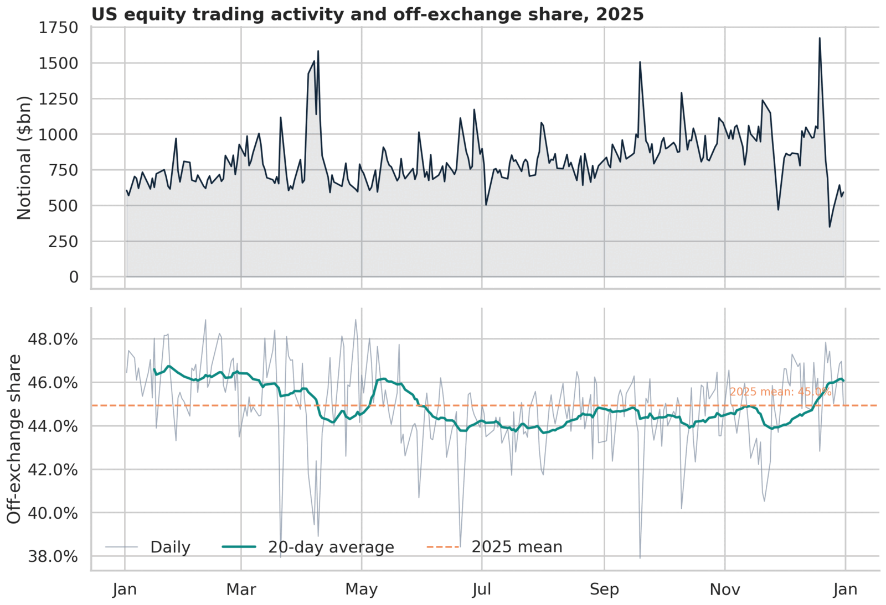
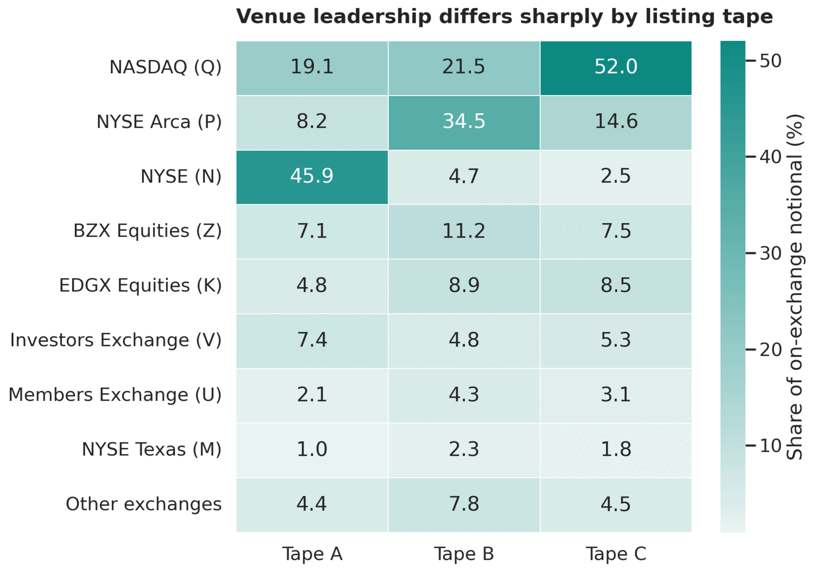
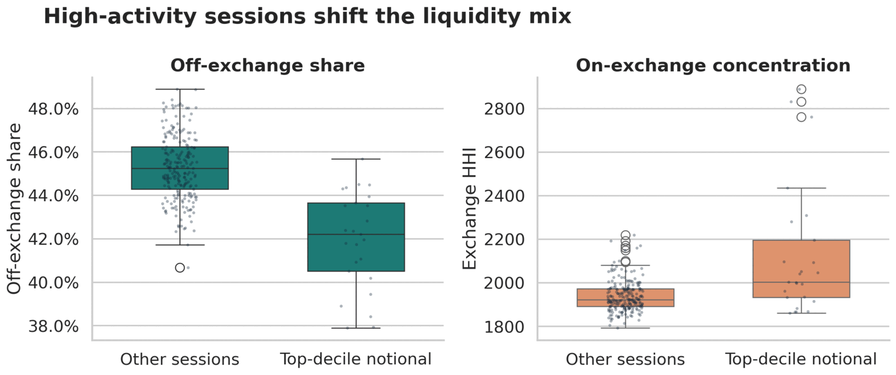
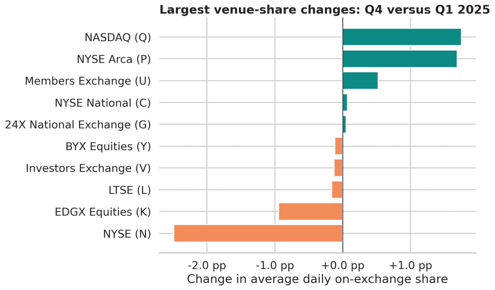

Use more than one activity measure
Report notional, shares and trade count together when the denominator changes the conclusion.
Liquidity intelligence · 2025 public data
A compact study of exchange and off exchange activity, venue specialisation and liquidity regimes, built to support the questions a trading or liquidity forum should ask next.
The question
Cboe publishes daily shares, notional value and trade count for US equity exchanges and FINRA Trade Reporting Facilities, split by Tape A, B and C. I use notional as the primary measure of risk transferred, then compare it with shares and trades so the result is not driven by a single denominator.
The first control is deliberately operational: every participant must map to either an exchange or a TRF, each record for a venue and day must be unique, and the three tape notionals must reconcile to the published total. A new or renamed venue stops the notebook instead of silently falling out of the analysis.
Off exchange activity averaged 45.0% of notional, 50.7% of shares and 41.1% of trades. That difference is a useful clue about the mix of security prices and trade sizes, not proof of any one execution mechanism.


Venue fit
The largest exchanges account for most displayed activity, but leadership changes with the listing universe. NYSE leads Tape A, NYSE Arca leads Tape B and Nasdaq leads Tape C.
For liquidity expansion, broker discussions or connectivity prioritisation, the relevant question is not simply “Which venue is largest?” It is “Which venue matters for the symbols, sessions and execution workflows in scope?”
Liquidity regimes
I define peak activity as the 25 sessions in the top 10% by total notional and compare them with the other 225 days. Off exchange share was 3.34 percentage points lower on those busy sessions.
Bootstrap 95% interval: I repeatedly resampled the trading days and recalculated the difference. The central 95% of those estimates ranged from −4.23 to −2.48 percentage points. Because the whole interval is below zero, the estimated difference keeps the same direction under resampling. It does not prove what caused the difference or guarantee the same result in another year.
HHI: The Herfindahl Hirschman Index measures concentration by squaring each exchange's percentage market share and adding the results. It reaches 10,000 if one exchange has all activity, while lower values indicate a more even distribution. The effective number of exchanges, calculated as 10,000 divided by HHI, expresses this as the equivalent number of equally sized venues.
On peak activity days, on exchange HHI was about 188 points higher and the effective number of exchanges fell. Together, these measures indicate that trading became more concentrated in a smaller group of exchanges. Primary or auction venues may contribute to the pattern, but the daily data cannot identify auction prints. Confirming the cause would require intraday or order level data.


Monitoring output
Nasdaq and NYSE Arca gained the most share between Q1 and Q4, while NYSE and EDGX declined. The notebook also compares each venue's latest daily share with its prior 20 session mean and volatility.
That combination gives a slower roadmap view and a faster investigation queue. It does not label a move “good” or “bad”; it identifies where to ask what changed in routing, fee tiers, auctions, client flow or venue functionality.
Decision use
The value of the analysis is the next set of questions it enables: where to focus execution data, which external questions to ask and how to distinguish a market wide regime from an issue specific to one client.
Report notional, shares and trade count together when the denominator changes the conclusion.
Assess venue relevance by tape and symbol mix before investing in coverage or connectivity.
Benchmark broker and venue outcomes separately on peak volume sessions or days with heavy auction activity.
Use the share monitor to focus discussions on a defined venue, period and possible driver.
Limits
A TRF record shows an off exchange report; it does not identify whether the execution occurred at an ATS, wholesaler or another broker. Daily aggregates cannot measure spread, fill rate, queue position, price improvement, markout, market impact or latency. HHI is a concentration measure, not an execution quality score.
The next step would join internal child order and fill data to venue, broker, quote, auction and event calendar features. That would test whether the market wide signals explain actual execution outcomes.
Sources